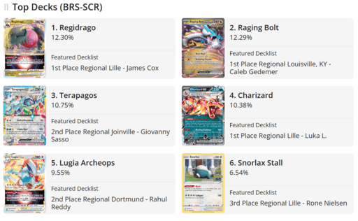

One of the most helpful resources for playing competitive pokemon is Limitless TCG. Limitless TCG has the biggest and most up to date data base of Pokemon Tournament results. Using this website you can see what the most popular decks are, view statistics and results From recent events, and even view the decklists of top players. If you're not sure what kinda of deck to use, picking a deck from the top decks list is a pretty safe choice.
Something that's helpful to understand when deckbuilding is something called the "metagame" or "meta" for short. The key concept to develop is understanding what decks other people will likely play. Once again, Limitless TCG is an excelent resource for this. If you have a good idea of what decks other people will play, then you can choose and modify your deck accordingly. For example, a major Deck right now is "Snorlax Stall." Snorlax Stall is a deck that focusses on finding cards that can shut down your opponents. So it's important to know what your opponents are using. For anyone not using Snorlax Stall right now, it's important to have cards to counter it like cancelling cologne.